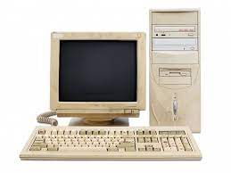

Charakteristika
IP adresa slouží k rozlišení síťových rozhraní připojených k počítačové síti. Síťovým rozhraním může být síťová karta (Ethernet, Wi-Fi), IrDA port, ale může se jednat i o virtuální zařízení (loopback, rozhraní pro virtuální počítač a podobně).
IPv4
Internet protokol používá od začátku tzv. IPv4 formát IP adresy. IP adresou je v IPv4 32bitové číslo, které je definováno jako čtyři oktety, tj. čtyři osmice bitů (ne všechny počítače v minulosti používaly osmibitové slovo, resp. bajt). V běžném textu je IP adresa zapisována čtyřmi desítkovými čísly oddělenými tečkami, kde každé číslo reprezentuje jednu osmici z IP adresy (tj. jeden bajt), např. 192.168.48.39
Vysvětlivky
- HTML
- je v informatice název značkovacího jazyka používaného pro tvorbu webových stránek
- HTTP
- je internetový protokol určený pro komunikaci s WWW servery
- Validátor
- Kontrolor stranek apod.
- Server
- Server je v informatice obecné označení pro počítač, který poskytuje nějaké služby, nebo počítačový program, který tyto služby realizuje. V unixových systémech je případně označován jako démon (anglicky daemon), v Microsoft Windows potom jako služba (anglicky service).
| Nečíslovaný seznam | Prvky stránky | Obrázek | |
|---|---|---|---|
| Značky | Entity | ||
|
<p> | & |  |
| <b> | © | ||
| Odkaz | https://www.ismycomputeronfire.com/ | ||